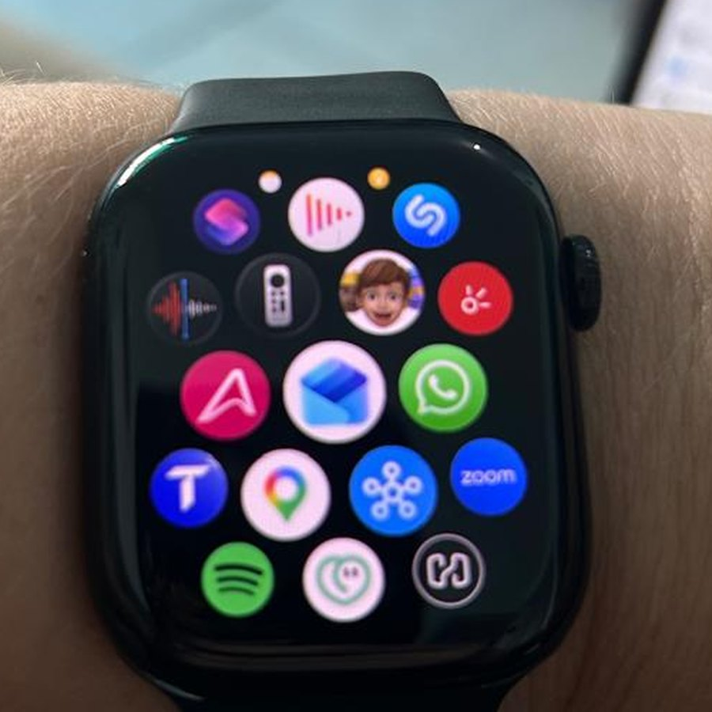
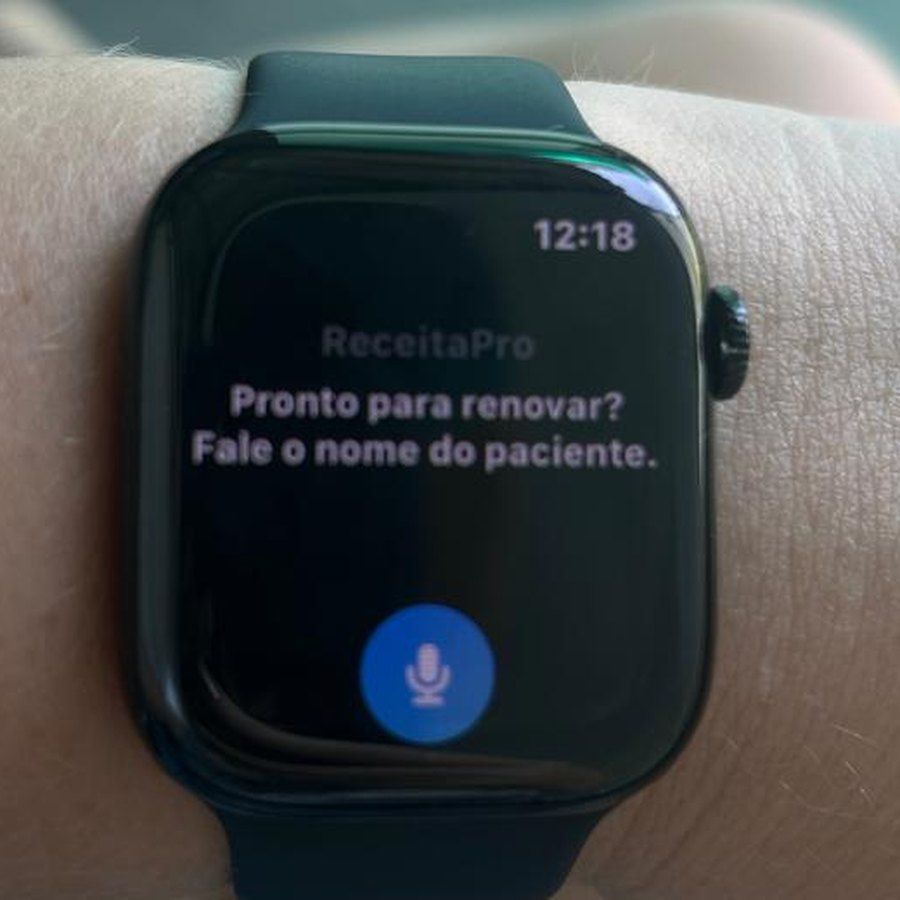
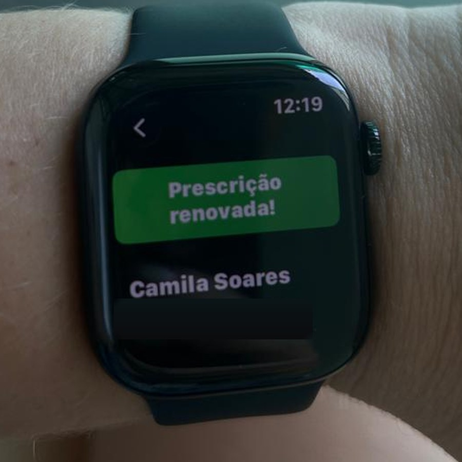
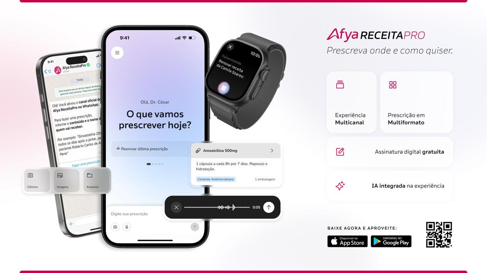
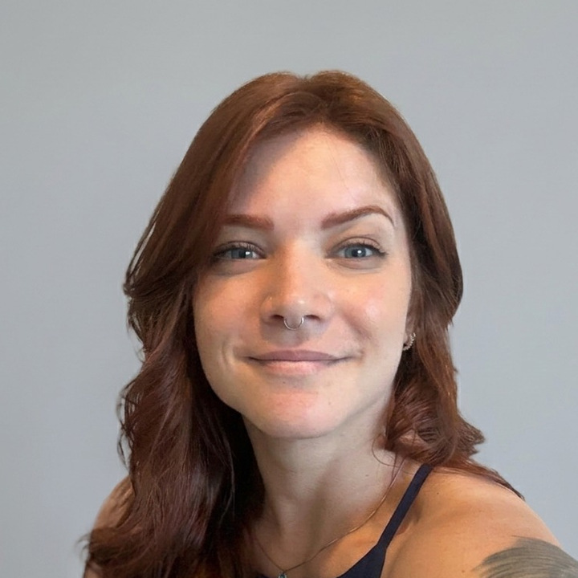

Prescrição no pulso · Afya ReceitaPro · Inovação · IA · 2026
A primeira prescrição por smartwatch do Brasil
Renovar a receita de um paciente em poucos segundos, apenas com a voz, de onde o médico estiver. Um experimento de inovação pensado para a rotina real do médico, e um primeiro passo em direção a agentes de IA no fluxo clínico.
O desafio
O médico divide o dia entre vários vínculos e muitos deslocamentos. Renovar um tratamento de uso contínuo é simples, mas costuma esperar até ele voltar a um computador.
A aposta
Levar a prescrição até onde o médico está: um fluxo por voz no relógio que encontra o paciente, recupera a última prescrição e envia direto para o WhatsApp do paciente.
Meu escopo
Visão de produto e tese, desenho do fluxo end to end junto com design e engenharia, e a condução do experimento com voz e IA como um novo canal do Afya ReceitaPro.
O resultado
A primeira prescrição emitida por smartwatch no Brasil, em 2026, até onde nosso mapeamento de mercado mostrou. Renovação em poucos segundos: falar, conferir, confirmar, e o paciente recebe no WhatsApp.
A rotina do médico não cabe em um consultório
No Brasil, trabalhar em um único lugar é exceção. Segundo o estudo Demografia Médica no Brasil (FMUSP, CFM e Cremesp), apenas 22% dos médicos têm um único empregador, e quase metade trabalha em três lugares ou mais. O dia se divide entre hospital, consultório, plantão e o trânsito entre eles.
No meio dessa rotina chegam as renovações: pacientes em tratamento contínuo que precisam de uma nova receita para seguir com a medicação. É uma tarefa rápida, mas depende de o médico parar, abrir um computador e percorrer o fluxo inteiro. Enquanto isso, o paciente espera, e a adesão ao tratamento fica em risco.
Número de empregadores por médico no Brasil
Percentual de médicos. Fonte: Demografia Médica no Brasil 2015 (FMUSP, CFM, Cremesp).
Renovar em segundos, de onde o médico estiver
Job to be done
Quando estou em deslocamento entre um atendimento e outro e um paciente em tratamento contínuo precisa de uma nova receita, quero renovar em poucos segundos, sem parar para abrir um computador, para que o tratamento não seja interrompido e meu paciente se sinta acompanhado.
A tecnologia a favor do médico, e não o médico se adaptando à tecnologia.
A tese de produto do Afya ReceitaPro é deixar o médico prescrever onde e como quiser. O smartwatch leva essa tese ao limite: no trânsito, correndo, surfando ou entre uma consulta e outra, a renovação está a uma frase de distância.
Falar, conferir, enviar
O fluxo inteiro cabe no pulso. O médico fala de forma natural, a IA entende a intenção, encontra o paciente e recupera a última prescrição. O médico continua no controle: nada é enviado sem a confirmação dele.



Fotos reais do experimento. Camila Soares é uma paciente fictícia, usada na demonstração.
Vídeo de lançamento
O fluxo completo em ação, com áudio.

O relógio como mais um canal do Afya ReceitaPro, ao lado do app e do WhatsApp: experiência multicanal, prescrição em multiformato, assinatura digital gratuita e IA integrada.
Agentic AI no pulso: da intenção à ação
Mais do que uma nova tela, o smartwatch foi um experimento de IA agêntica aplicada à prática clínica. Em vez de navegar por menus e preencher campos, o médico expressa uma intenção em linguagem natural, e a IA orquestra as etapas sozinha: transcreve o comando de voz, identifica o paciente, recupera a última prescrição, prepara a renovação e entrega ao paciente no WhatsApp. O médico segue como human-in-the-loop, revisando e aprovando antes de qualquer envio.
Inovação que nasce da rotina, não da tecnologia
O smartwatch colocou o Afya ReceitaPro na vanguarda da prescrição digital no Brasil, com a primeira prescrição do país emitida pelo pulso. Além do marco, o experimento abriu um caminho: mostrou que voz, IA e os dados do próprio produto podem transformar uma tarefa clínica recorrente em uma frase.
- Comece pelo job, não pelo dispositivoO relógio só fez sentido porque a renovação é curta, frequente e acontece em movimento. O canal certo depende do job certo.
- Menos interface, mais intençãoTelas pequenas obrigam a desenhar o que o produto entende, e não o que o usuário preenche.
- A confirmação é o novo formulárioCom a IA executando as etapas, o centro da experiência passa a ser uma revisão clara e segura antes do envio.
- Medir no pulso é outro jogoColetar dados de uso na interface do Apple Watch foi um dos maiores desafios: uma interface de terceiros, uma tecnologia nova e menos opções de instrumentação do que na web ou no app. Planejar a medição desde o início faz parte do experimento.
- Experimente pequeno para aprender grandeUm experimento focado, com um job e um canal, testou o modelo agêntico sem colocar o produto principal em risco.

Case conduzido por
Laíssa Margoni
Staff Product Manager